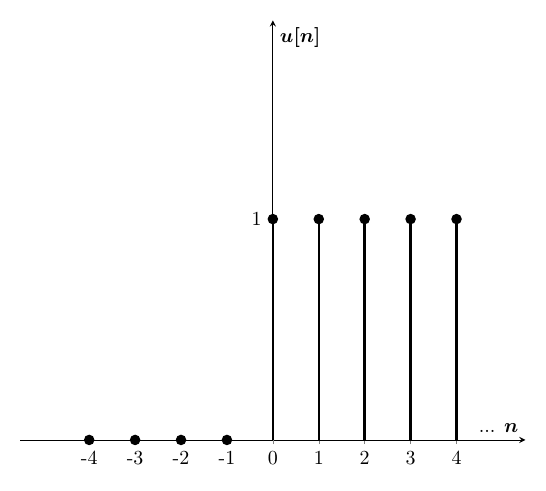
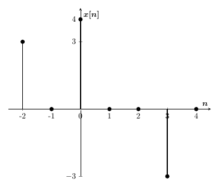

Processamento
Digital de Sinais
Fabrício Gomes
fgs.fabricio@gmail.com
Aula 3
Apresentação disponível no GitHub: https://github.com/fgsfabricio/PDS_Unisul
2018.1
Sinais Discretos Importantes
Amostra Unitária
$$\delta[n] = \begin{cases} 0, n \neq 0\\ 1, n = 0 \end{cases}$$
Sinais Discretos Importantes
Degrau Unitário
$$u[n] = \begin{cases} 0, n < 0\\ 1, n \geq 0 \end{cases}$$ Sinais Discretos Importantes
Rampa Unitária
$$r[n] = \begin{cases} 0, n < 0\\ n, n \geq 0 \end{cases}$$Sinais Discretos Importantes
Exponencial
$$x[n] = A\alpha^n$$Sinais Discretos Importantes
Senoidal
$$x[n]=cos(\omega_0n+\theta)$$Representação de sinais por Outros Sinais
Exemplo 1: representar $\delta[n]$ por $u[n]$.
Representação de sinais por Outros Sinais
Exemplo 2: representar $r[n]$ por $u[n]$.
Representação de sinais por Outros Sinais
Exemplo 3: representar graficamente $x[n] = u[n] - r[n] - r[n-4] + u[n-4]$.
Representação de sinais por Outros Sinais
Exemplo 4: representar graficamente $x[n] = 2u[n] - 2\delta[n] - \delta[n-1]$.
Representação de sinais por Outros Sinais
Exemplo 5: representar $x[n]$ por $\delta[n]$.
Representação de sinais por Outros Sinais
Qualquer sinal $x[n]$ pode ser expresso por impulsos deslocados e escalados:
$$x[n] = \sum\limits_{k=-\infty}^{\infty} x[k]\delta[n-k]$$Resposta ao Impulso
- Caracteriza o sistema Linear e Invariante no Tempo (LIT).
- Sabendo a resposta ao impulso, é possível classificar o sistema (em causal e/ou estável).
$$T \{ \delta[n] \} = h[n] $$
Soma de Convolução
$$x[n] \Longrightarrow y[n]$$$$\sum\limits_{k=-\infty}^{\infty} x[k]\delta[n-k] \Longrightarrow \sum\limits_{k=-\infty}^{\infty} x[k]h[n-k] $$
$$y[n] = x[n]*h[n]$$
Soma de Convolução
Exemplo 1: Resolver $y[n] = x[n]*h[n]$.
 $*$
Soma de Convolução
Exemplo 2: Resolver $y[n] = x[n]*h[n]$.
$*$